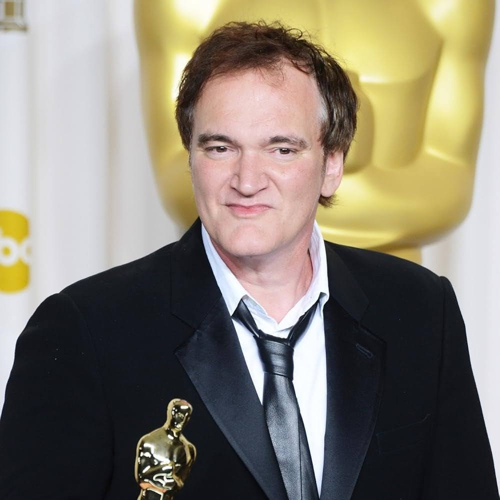
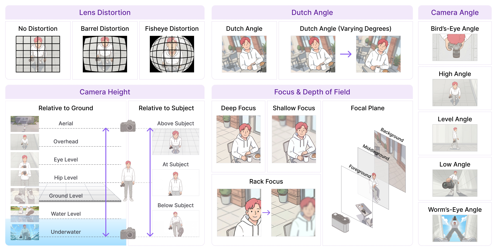
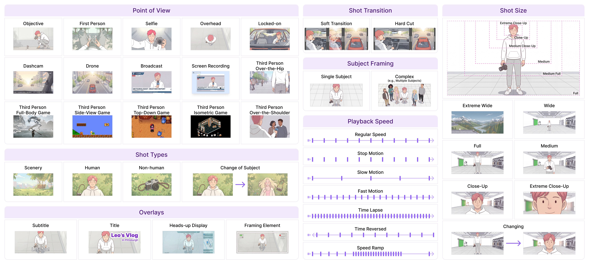

When people ask me if I went to film school, I tell them, ‘no, I went to films.’

A reference-first AI film studio. Discover, learn from, and reuse professional cinematic clips — all in one place. At its core: a cinematic video search engine that outperforms Gemini Embedding 2 and Qwen3-VL Embedding.
1Carnegie Mellon University · 2Harvard University
*Equal contribution as co-first authors
In filmmaking, visual references are everything. They spark inspiration before you create, they teach techniques by example, and over time they're how you build visual taste — a craft no amount of prompt engineering can substitute for.
But the tools that support this — Shotdeck, Vimeo, and the rest — are stuck on metadata, titles, and tags. Moodio rebuilds the cinematic search engine with modern vision-language models, then plugs it directly into the AI video production workflow through three agent-guided stages: Inspire → Learn → Generate.
Natural-language search over fine-grained cinematic content — not just titles and tags, but camera movement, shot composition, focus shifts, and temporal dynamics.
Chat with the agent to understand why a shot works. Inspect predicted cinematic tags and retrieve similar examples for further study.
Reuse a reference's structure across all five aspects — subject, scene, motion, spatial layout, and camera — into a generation prompt for your own content.
Figure 1. The Moodio user journey. A creator without formal film training (Leo, apparel designer) progresses through three reference-first stages: Chat-to-Inspire (browse cinematic references in natural language), Chat-to-Learn (understand why a reference works via predicted cinematic tags), and Chat-to-Create (transfer its structure into the user's own generation).
Before shooting, every filmmaker studies existing work: browsing Shotdeck, watching movies, building mood boards. This reference-first process is how visual taste develops, yet it's completely absent from AI video tools. Moodio brings it back. Search for "rack focus from foreground treat to background dog with speed ramp" and actually find it.
Figure 2. Left: the Chat-to-Inspire interface. Users issue natural-language queries using cinematic terminology ("camera starts focused on a person in the foreground, then rack focuses to someone in the background") or temporal dynamics ("shot starts indoor and transitions to outdoor"); Moodio surfaces grounded reference clips. Right: the 5-aspect caption schema powering retrieval, grounded by the CameraBench-Pro skill taxonomy.
Moodio's structured retrieval speaks the language of cinema across 5 aspects:
🧑 Subject · 🏞️ Scene · 🏃 Motion · 📐 Spatial · 🎥 Camera
Found an inspiring reference? Now learn why it works. Moodio displays predicted cinematic tags for each video and lets you chat with the agent to understand how the shot is constructed — what camera movement, angle, focus, and framing choices make it effective. You can also ask "show me more videos with the same camera movement" and the agent retrieves similar examples for further inspiration.
Figure 3. Left (Watch-to-Learn): selecting a reference surfaces structured metadata across all 5 aspects — camera movement, steadiness, height, angle, focus, shot type, shot size, playback speed, POV — up to 225 cinematic tags per video. Right (Chat-to-Learn): a conversational agent explains why the shot works (here, Star-Lord's dolly zoom creating vertigo) and retrieves more shots with matching camera movement on demand.
Instead of writing cinematic instructions from scratch, select a reference video whose structure you want to reuse. Moodio transfers its subject, scene, motion, spatial layout, and camera behavior into a generation prompt for your own content — across twelve state-of-the-art generators including Seedance, Kling, Wan, Veo, and Sora.
Figure 4. Three reference-to-generation transfers. In each scenario the user selects a reference clip (Selected Video) and their own asset (User's Asset), then describes the edit conversationally. Moodio preserves the reference's cinematic structure — rolling top-down motion with rack focus (pet treat), fly-through light-ring transition (VR headset), water-surface tracking shot (phone ad) — while swapping in the user's subject.
Three contributions: a structured retrieval method that matches generative reranker quality at scale, the largest cinematic taxonomy to date (CameraBench-Pro), and a 50K-query benchmark covering single keywords through 400-word cinematic scripts in English and Chinese.
Each video is captioned along five aspects — subject, scene, motion, spatial, camera — and each caption is encoded into its own Qwen3-Embedding-8B vector. At query time we embed the user query once and score each video by the max cosine similarity across its five vectors, so the query aligns to whichever aspect it most directly targets. All vectors are pre-indexed offline.
| Strategy | Caption Source | Caption Type | Scalable | Time/Query | Hit | MRR@10 | ||
|---|---|---|---|---|---|---|---|---|
| @1 | @5 | @10 | ||||||
| Off-the-shelf models | ||||||||
| Gemini Embedding 2 | — | — | ✓ | — | — | — | — | — |
| Qwen3-VL Embedding | — | — | ✓ | — | — | — | — | — |
| Qwen3-VL Reranker | — | — | ✗ | — | — | — | — | — |
| Qwen3 Embedding | Qwen3-VL | Single-Caption | ✓ | — | — | — | — | — |
| Qwen3 Embedding | Qwen3-VL | Structured-Caption | ✓ | — | — | — | — | — |
| Using Qwen3-VL-SFT captions (ours) | ||||||||
| Qwen3 Embedding | Qwen3-VL-SFT | Single-Caption | ✓ | — | — | — | — | — |
| Qwen3 Embedding | Qwen3-VL-SFT | Structured-Caption | ✓ | — | — | — | — | — |
Table 1. Retrieval on the Moodio-T2V benchmark. Our 5-aspect structured-caption retrieval (highlighted) outperforms embedding baselines (Gemini Embedding 2, Qwen3-VL Embedding) and matches Qwen3-VL Reranker quality orders of magnitude faster, since Reranker requires a forward pass per (video, query) pair and is infeasible at million-video scale. Numbers will be filled in upon release.
The largest professionally-annotated cinematic video understanding dataset to date — a 4× expansion of CameraBench (NeurIPS '25 Spotlight) from camera motion to the full language of cinema. Co-designed with 100+ professional filmmakers over a year.


Figure 5. Excerpts from the CameraBench-Pro taxonomy. Left: camera-side primitives (lens distortion, Dutch angle, camera angle, camera height, focus & depth of field). Right: scene-side primitives (point of view, shot types, shot transitions, subject framing, playback speed, shot size, overlays).
Prior text-to-video benchmarks (MSR-VTT, LSMDC, DiDeMo) use short, stylistically uniform English queries with one-to-one query-video mappings. Moodio-T2V instead spans single keywords through 400-word cinematic descriptions across four framings (concise / question / request / verbose) and two languages — with pooled relevance sets so multiple videos can satisfy the same intent.
Figure 6. The Moodio-T2V query simulator. Each held-out video is decomposed into a grounded 5-aspect caption, sampled into structured query contents, then rendered into eight surface forms (concise / question / request / verbose × EN / ZH) — yielding 50K diverse queries.
Moodio is one pillar of our research program on precise video language for professional video understanding and generation. It builds on CameraBench and shares its annotation platform and post-training recipes with CHAI.
🚀 We are actively advancing Moodio with richer taxonomies, stronger video understanding models, and a growing corpus of professional references.
We welcome collaborations and funding opportunities with researchers and practitioners in video understanding, cinematic generation, and multimodal agents for professional-level video content.
If you're interested in accessing improved data or models — or in partnering on the Moodio platform — please reach out at zhiqiulin98@gmail.com, try the live demo at app.moodio.ai, or open a GitHub Issue.
Two end-to-end reference-first journeys from real Moodio users — different domains, same workflow.
Figure 7. A museum exhibition designer searches "entering a new world with VR glasses" to find references (Chat-to-Inspire), then asks Moodio what makes the selected clip feel cinematic — learning that a first-person POV, a dolly-forward through a tunnel, and heavy motion blur converge toward a vanishing point (Chat-to-Learn). Finally, he reuses that POV and warp-tunnel structure but rebuilds the tunnel walls from archaeological excavation layers, bursting into the Babylonian Empire at its peak (Chat-to-Create).
Figure 8. A pet industry marketing specialist wants to create short product videos that make dog treats look irresistible but lacks a professional crew. (Chat-to-Inspire) The user searches for clips of pets going crazy for treats and selects a high-energy reference. (Chat-to-Learn) The user asks what cinematic effects are used; the agent explains the rack focus with shallow depth of field shifting from the treat in the foreground to the dog in the background, combined with a speed ramp from slow motion to normal speed as the dog catches the treat. (Chat-to-Create) The user applies the same camera angle and effects to their own treat image, adding more dogs entering the frame and a camera roll for extra energy.
We will release the full pipeline: CameraBench-Pro dataset, the Moodio-T2V benchmark, structured retrieval models, the annotation platform, aggregated anonymized user logs, and all evaluation code. Try the live system at app.moodio.ai.
@misc{rao2026moodio,
title={Moodio: Making Anyone a Professional Video Studio},
author={Ryan Rao and Ruihuang Yang and George Liu
and Chancharik Mitra and Siyuan Cen and Yuhan Huang
and Shihang Zhu and Jiaxi Li and Ruojin Li
and Hewei Wang and Yu Tong Tiffany Ling and Yili Han
and Yilun Du and Graham Neubig and Deva Ramanan
and Zhiqiu Lin},
year={2026},
note={Under review}
}
Moodio is a deeply collaborative project. Below is a condensed contribution map; component leads reflect substantial sustained effort beyond the listed tasks. Many components also depend on the concurrent CHAI work that powers Moodio's data, captioning, and reward modeling. Ryan Rao*, Ruihuang Yang*, and George Liu* contributed equally as co-first authors.